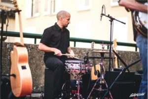

Recital de Poesia
Concurs de poemes de l'alumnat de la ESO de l'institut Abastos. Tindrem l'honor
de que els millors 20 poemes d'aquest concurs, siguen recitats per els seus autors en la nostra sala.
Durant el recital, hi haura un jurat constituit per tres persones, preparades per a seleccionar 3 d'aquests
poemes que serán premiats amb grans prèmis que es revelaran al inici del recital.
20/03/2020 --- 19:30
Lazy Daisy Band en Vivo

Arriba a la nostra sala la banda de Margarita Perezosa. Traduït al espanyol,
no queda tan "cool" pero el seu ritme, la seva musicalitat y el bon humor que transmet, no deixen
indiferent a ningú. Qualsevol que els haja escoltat abans, sap que transmeten bon rotllo i ganes de pasarho be,
No perdis aquesta gran oportunitat, que contat perd!
28/03/2020 --- 23:30